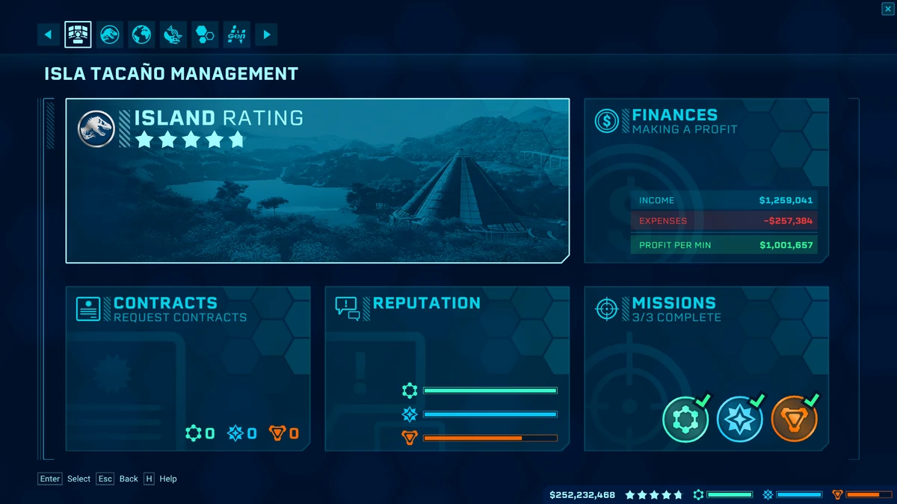

How To Play
How To Play
Power
Making an Enclosure
Making a Dinosaur
Research
Ranger Station
ACU center
Finances
Divisions
Rating
Basics
Power
 First thing you need in your park is power.
First thing you need in your park is power.
Without power you can't do anything because nothing works.
You get power when you place down a small/medium/large power station.
Watch out that you don't have to little power,
but you also have to watch that you don't have to much power
because power cost money and that goes off of your profit.
Making An Enclosure
Before you make a dinosaur you have to build an enclosure. An enclosure is build with fences that you put around an area
and in that area you put everything that is needed to make a dinosaur happy and healthy.
In an enclosure you need a forrest and an open space, becuase every dinosaur needs those things.
You also need feeders. Feeders are things that feed your dinosaurs.
There are 5 different types of feeders:
grass feeder for herbivores that gives a bush to herbivores to eat from,
live bait feeder that spawns goats for carnivores to eat,
a meat feeder that gives a bunch of meat for a carnivore to eat from,
a high feeder for large/long neck dinosaurs
and a fish feeder is a cage with fish in it and is meant for a couple of carnivores that eat fish.
The fish feeder has to be placed in water.
Make sure that your enclosure is big enough for the dinosaur because if that is not the case
the dinosaur will get mad and try to escape to attack the guests.
d
Making A Dinosaur
After you have power and an enclosure you have to make dinosaurs.
A dinosaur is made with a Hammond Creation Lab, but befor you can make one
you have to go on expeditions to collect dinosaur DNA with a expedition center.
When you have 50% of a dinosaur complete you can make one in a Hammond Creation Lab,
but there is a high chance of failure. You can decrease the chance of failure
by getting more DNA by going on more expeditions.
Research
 Some things you unlock by research,
Some things you unlock by research,
like: some dinosaurs, cures for diseases, upgrades for buildings or genetic upgrades.
Most of these things are not necessary but are usefull to have to complete your park,
like genetics are just to get the stats of your dinosaur higher
like longer life or more attack power.
Some of these are necessary like the monorail or the medical treatment for diseases,
because when your dinosaurs get sick you need the cure to cure the dinosaurs.
Ranger Station
Next on the list is a Ranger station.
A ranger station is used to fill up feeders, cure dinosaurs and fix broken things.
You can drive a ranger station or you can give it tasks to do something for you without you having to control it,
just be careful that your ranger cars don't get destroyed by dinosaurs on their missions
There are some upgrades for the ranger station that make is a lot better,
like the ranger team scheduling upgrade which gives you the ability
to let the rangers do an extra task. You have also the reload speed and the accuracy upgrades
which helps with curing dinosaurs. An extra thing to do with the ranger station
is to build on ilsa Nublar (the sandbox island) a fun circuit to drive on with some ramps and sharp turns.
ACU Center
 Together with the ranger station goes the ACU center.
Together with the ranger station goes the ACU center.
The ACU center is meant to tranquilize escaped dinosaurs and get them back in their enclosures.
The ACU center has the similar upgrades to the ranger station,
like ACU scheduling, accuracy and reload speed.
It is sometimes also fun to fly around in the helicopter to see how your park is from the air.
Also an added bonus with the ACU center is when you completed the games ones,
the ACU gets the ability to cure dinosaurs just like the ranger station.
It is very helpful that the ACU can cure dinosaurs because the chopper doesn't get attacked by dinosaurs.
How to keep a park going

Finances
 Probably the most important thing to keep your park going is making a profit.
Probably the most important thing to keep your park going is making a profit.
You can make money by selling tickets
and by building stores, like gift shops or restaurants.
To sell tickets you have to have dinosaurs in your park
and you have to build stores to keep guests happy. The more dinosaurs you have, the more guest come to your park, the more money you make.
Divisions

 cropped.jpg) When you're making enough profit to no longer
When you're making enough profit to no longer
having to worry about going bankrupt
you can focus on doing contracts.
When you do contracts you get a reward afterwards
but that reward is most of the time less then the money
you have to spent to complete the contract.
The main point of the contract is to get your reputation with the different divisions up.
When you complete a contract for a division, that divisions rating goes up,
but the reputation for the other divisions goes down.
If you have a high enough reputation you get a reward from the divisions.
Almost all the rewards on the island are in the reputation bars
(besides the rewards you get with your island rating but I'll get to that later).
 Every division has on every island a mission for you.
Every division has on every island a mission for you.
You get the missions to get the reputation bar to the point where the mission is.
You can do the mission right away or you can prepare a bit before you do it
and I recommend that you prepare before you do it.
These missions have a good money reward
and have something else special like a dinosaur or an upgrade to an building.
When you complete it.
Rating

The island rating is split up into 2 sections: The dinosaur rating and the facility rating.
The dinosaur rating is determined by: the welfare of the dinosaurs, the rating from the dinosaurs and the variety.
Every dinosaur has its own rating, most of the carnivores have a higher rating then the herbivores.
The total stars for the dinosaur rating is measured with the determined subjects.
The more dinosaurs the more raiting you get,
but watch out that you vary them because if you have to much of the same your score goes down.
If dinosaurs are not happy than that gives you also minus points.
 The other section of the total island rating is the facility rating.
The other section of the total island rating is the facility rating.
The facility rating is determined by: shelter protection, dinosaur visibility, food/drink/fun/shopping/transport rating and capacity.
You can increase your shelter protection protection by placing shelters on your island, shelters keep your visitors safe when
dinosaurs escape or when there is a strom. Dinosaur visibility can be increased
by placing viewing platforms, guest can see through them to see the dinosaurs
in your park. Your food/drink/fun/shopping/transport rating is determined by the number of amenities or shops.
Every viewing gallery has to have a amenitie from every subject.
Transport rating is different, transport rating depends on the accessibility of your park.
You can increase the accessibility by placing monorails that get visitors from place to place.
Last in your capacity and that depends on the amount of hotels in your park.
When you have no hotels the park will be overcrowded and that brings your rating down.
Place hotels in your park to decrease the overcrowding in your park and to get your rating up.
Your total island rating is a combination of the dinosaur rating and the facility rating so you have to get them both 5 star to get a 5 star total for your island. There are also star rewards al I like to call them and on every island there are rewards for a 3 star island and a 5 star island. The 3 star reward is almost always the reward for a new island, so when your island is at a 3 star rating you could leave to a different island but you would probably miss some rewards that might help you later.